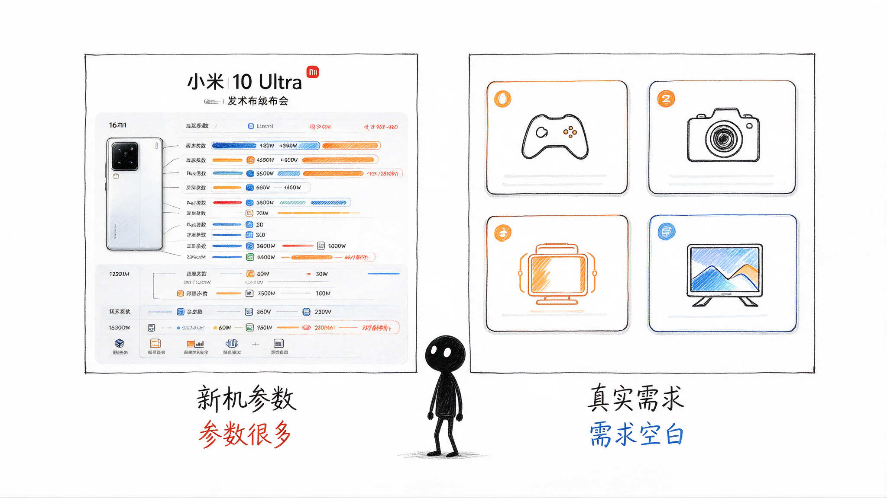

01 · 需求起点
大学生第一次买手机，还不知道自己真正需要什么
大学生第一次买手机时，参数很多，经验很少。
多数人不知道 CPU、运行内存等参数意味着什么；少数会看参数的人， 也很难把它换算成游戏、拍照、续航和屏幕体验。
第一部手机暴露了需求，也制造了后续换机动机。
机会判断
大学生第一次购机时，往往以为自己在比较参数。真正决定下一台手机的， 是使用之后才暴露出来的需求。二手机性价比高、价格更低，但只有解决学生的认知、 信任和售后顾虑，才能让学生敢换、换得合适。

01 · 需求起点
大学生第一次买手机时，参数很多，经验很少。
多数人不知道 CPU、运行内存等参数意味着什么；少数会看参数的人， 也很难把它换算成游戏、拍照、续航和屏幕体验。
第一部手机暴露了需求，也制造了后续换机动机。
02 · 需求被激活
原神卡顿、手机发烫、远处拍不清、一天4充，都是能直接感受到的体验落差。
这些需求先出现在游戏、摄影和重度使用场景里， 再逐渐变成明确的换机理由。
学生开始想换手机，但想换不等于会买。
03 · 决策阻力
新机价格高，二手机价格更低，性价比优势让学生开始考虑换机。
但学生无法确认电池、维修史、暗病和售后责任，会停在 “想省钱”和“怕买错”之间。
要完成交易，还必须解决从哪里买、如何验证的问题。
04 · 交易缺口
二手平台有大量手机，却没有替学生完成设备判断和风险承担。
校园熟人、当面验机、短期退换和可以找到的责任人， 共同降低了非标交易里的信任成本。
当第一批学生完成交易，信任开始在同一个圈层传播。
05 · 需求验证
一个宿舍里的原神玩家完成购买后，试玩和推荐会把更多同学带入同一条路径。
第一批买家来自同学院、同宿舍和共同兴趣圈层。 他们降低了获客成本，也让信任变成可以继续传播的资产。
机会因此不只是便宜，而是低风险的成交路径。
机会判断结论
学生先经历第一部手机的错配，再产生换机意愿；随后被新机价格抑制， 又因二手机质量和售后不确定而犹豫。校园交易提供的当面验证、 可追责关系和同圈层口碑，把这种犹豫需求推进到实际成交。
因此，卖点不是单纯的低价，而是一个可验证、可追责、低风险的校园二手交易路径。